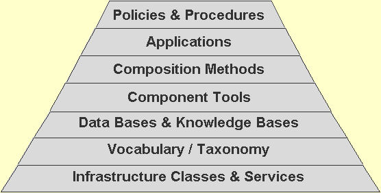
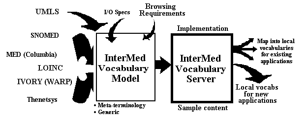
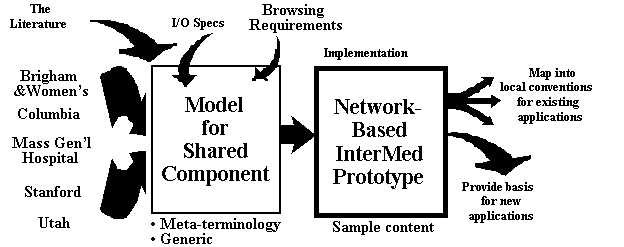

Note: Presented at INET '96, the Annual Meeting of the Internet Society, 25-28 June 1996, Montreal, Canada.
Edward H. Shortliffe, MD, PhD, Section on Medical Informatics,
Stanford University, Stanford, California
Octo Barnett, MD, Laboratory of Computer Science, Massachusetts
General Hospital, Boston, Massachusetts
James J. Cimino, MD, Department of Medical Informatics, Columbia
University, New York, New York
Robert A. Greenes, MD, PhD, Brigham and Women's Hospital, Boston,
Massachusetts
Vimla L. Patel, PhD, McGill Cognitive Science Centre, McGill University,
Montreal, Quebec
"Between collaboration and competition lies cooperation. Both collaboration and cooperation imply sharing data and other scientific resources. But the motivations and expected benefits are quite different. Cooperation may be impelled primarily out of narrow self-interest and may yield mutual benefit but not joint benefit. It can be construed as an exchange relationship. ... Collaboration can be construed as a communal relationship that implies social trust and synergy among participants, with mutual benefit as the result." [Committee on a National Collaboratory & Computer Science and Telecommunications Board (National Research Council), 1993] (page 8).
The rapid proliferation of new biomedical knowledge coupled with an increasing need to use limited resources more efficiently has presented unique and formidable challenges to the domain of medicine. It is widely recognized that technological change is an integral part of the solution for the clinical, educational, and research issues that confront the discipline. Medical informatics can be viewed as both an applied discipline concerned with adapting and optimizing technology for the delivery of safe and effective health care, and as a basic science which addresses fundamental issues at the interface between computer science, informationand communication science, medical tasks, and human behavior [Greenes & Shortliffe, 1990]. In this latter respect, it provides the theoretical and scientific basis for medical computing and medical information systems [Lindberg, 1986].
We report here on a multi-institutional project inspired by recommendations in a 1993 report on national collaboratories from the Computer Science and Telecommunications Board of the National Research Council (NRC) [Committee on a National Collaboratory & Computer Science and Telecommunications Board (National Research Council), 1993]. The preface of that report succinctly defines the notion on which we have built our work: "A national collaboratory is a center without walls, in which the nation's researchers can perform their research without regard to geographical location-interacting with colleagues, accessing instrumentation, sharing data and computational resources, [and] accessing information in digital libraries.... [Such a collaboratory is] more than a mere interconnection of computers [and offers] a complete infrastructure of software, hardware, and networked resources to enable a full range of collaborative work among scientists." Taking advantage of the rapid change in computing and communications technologies, the InterMed project seeks to demonstrate the viability of the collaboratory concept in the context of medical informatics research. InterMed was initiated as a collaboration among the Stanford informatics community, the Harvard Decision Systems Group (DSG), and the Columbia Presbyterian Medical Center (CPMC). Workers at Massachusetts General Hospital, the University of Utah, and McGill University are also closely involved. The broad project goal is to use the power of the Internet to support the following aims:
We are accordingly addressing a central issue identified in the NRC's report: "The proposed collaboratory testbed program is consonant with the objectives of the High Performance Computing and Communications (HPCC) Initiative. ... Many components of HPCC, such as research into medical computation and environmental computation, access to academic medical centers and environmental databases, prototyping of experimental high-performance computing systems, research into software tools, and computer access in general will require collaboration between scientists and technologists." We envision our efforts as precursors to a national (or international) collaboratory with many more participants.
The emergence of advanced networking capabilities under the High Performance Computing and Communications (HPCC) Initiative makes it feasible to consider component-based architectures for computer-based applications. Such architectures are highly desirable because they leverage the efforts of multiple participants (potentially at multiple sites), allow reuse of components, foster emergence of standards, permit integration of services from multiple platforms, and provide a mechanism for evolution of older, more monolithic ("legacy") systems.
Such capabilities are of particular importance in the healthcare marketplace, where systems are exceedingly complex, must serve multiple purposes, and must respond to the economic pressures that are forcing examination of ways to be more cost-effective. Yet traditional systems for the healthcare marketplace are primarily of a legacy nature and are poorly positioned to provide the architectural infrastructure needed. Using collaborative methodologies, we are seeking to develop a suite of capabilities, and communication protocols by which they can be used, such that any compliant workstation or central computer application can incorporate them. We seek to provide an architecture for evolution and expansion of capabilities in a component-based fashion that leverages the work of multiple independent developers. The approach should make the construction of applications more effective by allowing developers to focus on the flow and integration of information and not on the details of the underlying components.
We and others in the medical informatics community have recognized that the professional healthcare worker must be able to have access to a variety of resources in a problem-specific manner, and that those resources do not exist in a single system or on a single platform, but rather must be assembled as needed [Greenes & Shortliffe, 1990; Puerta, Tu & Musen, 1993]. Thus we envision workstations that will serve as the integrating mechanism for identifying the need for resources, gathering them together from disparate networked locations, and incorporating them into an integrated environment.
There has been a growing recognition of the impossibility of having any single system incorporate all desirable capabilities without a tremendous developmental burden, expense, and duplication of effort. Thus there has been great emphasis recently on the notion of modular system construction, domain-specific software architectures (DSSA) [Hufnagel, Harbison, Silva & Metalla, 1994], and the development of standards that will permit data sharing and software integration. Information technology experts in the healthcare arena now routinely identify the need to provide facile linkages among hospital information systems, imaging systems, departmental systems, external databases and knowledge bases, and similar components-all requiring a consistent taxonomy of concepts and well-articulated descriptions of components and how they must interact.
Advanced computing and communications capabilities, such as those being emphasized under the HPCC initiative, offer great hope for distributing system capabilities over high-speed networks while introducing new technologies for multimedia, video conferencing, and specialized computing (such as parallel search and 3-D modeling). Anticipating the rapid change in computing power and communications that is imminent, we are working to demonstrate the viability of the collaboratory concept as well as the component-based architectures that we believe will increasingly become the only practical way to construct large, complex software systems.
The model on which we have built our collaboration involves the decomposition of current development activities into sets of components that can be constructed at one or more institutions, shared with others, and then melded to provide robust applications that could not be developed as effectively by any single group.
We have developed a model composed of 7 tiers (Figure 1), each of which supports the levels above it:
Our work has been facilitated through the use of e-mail, file servers, World Wide Web (WWW) browsers, Internet-based applications of many sorts, and conferencing tools such as Timbuktu and phone conferences. In the initial years we have focused in particular on the construction of shared models and representations for clinical vocabularies and clinical guidelines (Tiers 2 and 3). Those shared models are being implemented on servers that are accessible via the Internet. Some early experiments at the higher tiers are also briefly described below.

Figure 1. Seven-Tiered Collaborative Architecture
The seven-tiered collaborative model resulted from extensive discussions among members of our groups who have sought to identify a useful organizational structure for explaining our interrelated activities. This tiered model is perhaps best understood in the context of evolving notions of middleware that have been extensively discussed in the computer-science and telecommunications communities [Korzeniowski, 1993]. For the Internet today, there is an underlying, readily available, infrastructure which consists of elements such as networks, servers, gateways, network-aware operating systems, protocol suites, and information services. On top of this infrastructure, people build various stand-alone applications-some general and some for particular domains-all essentially from scratch. These vertically-oriented application systems require a great deal of custom-tailored development effort.
We (and many others who are concerned about the complexity of software development, the time required to field new applications, and the failure to benefit from the experiences of others except through published articles) support ongoing efforts to develop additional middleware layers that need to be added to the network's architecture. There are at least two kinds of such middleware under development: general middleware (sitting atop the existing infrastructure and providing new kinds of services across application domains) and domain-specific middleware. Thus we seek to develop a layer of tools and services that cater to the domain-specific needs of biomedical applications (biomedical middleware) and that facilitate the development of more horizontally integrated workstation environments for medical professionals.
During the first two years of InterMed work, much of the emphasis has been placed on developing a shared view of how a generic clinical vocabulary should be structured [Oliver, 1995]. Representatives from all sites began by investigating representation tools to support developing, browsing, and modifying vocabulary knowledge structures. They surveyed the InterMed sites to focus the collaborative vocabulary server work on specific application goals stimulated by ongoing projects at the various institutions. Using an available Web-based knowledge-representation tool known as Ontolingua [Farquhar, Fikes, Pratt & Rice, 1995], team members from Stanford have adapted an Ontolingua WWW-based vocabulary editing tool for collaborative use among the InterMed project members [Gennari, Oliver, Pratt, Rice & Musen, 1995; Rice, Farquhar, Piernot & Gruber, 1996]. The editor has two immediate benefits: (1) because it is Web-based, it is hardware independent and usable on any machine that can run standard Web browsers, thus permitting ready access by collaborators at the other InterMed sites, and (2) it shields developers from the syntactic details of the Ontolingua language, allowing editing of the vocabulary content without requiring knowledge of Ontolingua (or even a local installation of Ontolingua). A software tool automatically generates Hypertext Markup Language (HTML) pages from Ontolingua and is used to update WWW pages which sit on a server at Stanford as workers at Columbia or Harvard add to the content of the vocabulary.

Figure 2. Development of a Collaborative Model for a Clinical
Vocabulary
Based on our early work, and guided by intense study of each other's vocabulary conventions, by the summer of 1995 we had defined a process for developing a shared vocabulary model as is shown in Figure 2. We were influenced by the major terminology effort coordinated by the National Library of Medicine (the Unified Medical Language System, or UMLS, with which several InterMed collaborators had also been involved as developers). We also sought to understand overlapping and conflicting needs and features of clinical vocabularies that were in use at the various sites. These included SNOMED, which had been studied extensively and adopted in part by many of us, but also the Medical Entities Dictionary (MED) which is in use at Columbia (InterMed researchers identified a sharable subset of Columbia's MED, dubbed "InterMED," which was converted to Ontolingua format and loaded on a server at Stanford), the LOINC system (a national development effort with which the University of Utah has been closely involved), the IVORY vocabulary (which evolved from Wisconsin's WARP terminology and has been used for the T-HELPER AIDS management project at Stanford), and Thenetsys vocabulary in use at Brigham and Women's Hospital. Guided by an analysis of the input/output characteristics that would be required by a network-based server if it were to meet the needs of our various application projects, as well as the associated browsing/maintenance requirements, we sought to develop a generic, implementation-independent vocabulary model which used a set of "meta descriptors" to define semantic elements that need to be represented [Oliver, 1995]. Using this model, which continues to evolve as we learn more about each other's work and requirements, an implementation has been created using the Ontolingua server mentioned above [Oliver et al., 1995]. Our goal is to demonstrate that the server can in turn provide the basis for mapping sub-vocabularies, represented using the generic model, back into the local vocabularies that we require for specific applications at our individual sites. In this way, future vocabulary-development efforts, at our institutions and elsewhere, may be able to draw on the generic model and server as they are fleshed out with additional content (see discussion below regarding recent applications work at the higher tiers). The effort is not meant to duplicate or compete with existing vocabulary efforts but, rather, to provide a generic model for how they can be related to one another, with the UMLS playing a key lookup role as the master thesaurus.
As we gained insight into the process by which we were evolving a shared view of the vocabulary server's role and representation requirements, we attempted to abstract the process, defining an approach to "collaborative model development" which we hoped would apply to other multi-institutional group development activities (Figure 3). More recently we have linked the vocabulary development work (Tier 2) to the generation of a shared model for clinical guideline representation and use (Tier 3), recognizing that a set of applications related to guidelines would be extremely helpful in testing/evaluating the relevant facilities of our vocabulary server while providing the focusing power of specific performance expectations. All InterMed sites are working locally on guidelines development and integration of guidelines into clinical systems. Through extensive discussion and email exchanges, we have begun to identify the common characteristics as well as methods for resolving some of the apparent central differences among the approaches. We are applying our generic approach for collaborative model development to the notion of a network-based guidelines server [Pattison-Gordon et al., 1996]. Early experiments at sharing such guidelines in applications developed at the higher tiers are also underway (see next section).

Figure 3. Generic Approach to Collaborative Model Development
As was mentioned earlier, our goal is to develop sharable components and resources at the lower tiers of our collaborative model and to use them for site-specific applications. We have described early examples of this approach, and further such developments are ongoing. For example, in one experiment, a successful mapping has been achieved between part of the clinical laboratory test vocabulary at Columbia and the diagostic findings vocabulary of MGH's DXplain program [Barnett, Cimino, Hupp & Hoffer, 1987]. By having the common vocabulary model, we have been able to automate the transfer of patient data directly into DXplain from Columbia to generate differential diagnoses for patients at Columbia from within that institution's clinical data management environment [Elhanan, Socratous & Cimino, 1996]. This effort required not only the development of shared vocabulary conventions but also collaborative agreements between Columbia and MGH on interface conventions for sending patient descriptors to DXplain over the Internet and receiving differential diagnosis information for display to clinicians at Columbia. In another experiment, InterMed collaborators have developed a cholesterol guideline program which can be integrated into Web-based clinical applications at other sites by passing patient information as parameters over the Net (age, sex, cholesterol, diagoses, etc.). The vocabulary server supports the specification of patient data which need to be expressed using a controlled terminology, such as diagnoses and risk factors [Cimino, Socratous & Clayton, 1995]. In yet another development effort, we have explored the use of the Web as a mechanism for supporting searching of the Medline literature database, developing a Web-based server that translates user requests into calls into a Medline server at the University of California [Detmer & Shortliffe, 1995].
One of the goals of the InterMed project has been to use advanced collaborative communications technologies and, in turn, to assess the strengths and limitations of network-mediated collaboration. Throughout the project, collaborators have been in almost daily contact, largely via electronic mail, and our online email archives are extensive. The archives also provide a detailed record of both the form and content of the joint design and development activities that have been assumed under the InterMed umbrella.
Despite the power and utility of electronic mail, we learned early in the collaboration that it has some serious limitations for the kind of joint research that we are pursuing. In particular, e-mail's narrow bandwidth is more than adequate for communication among individuals who know each other well and have shared perceptions of the problems on which they are jointly working. To try to address this issue, we have initiated occasional face-to-face meetings during national meetings or when members of one institution have visited groups at other institutions to see their systems in operation, to examine data structures in detail, and to get a much stronger understanding of how the developing shared resources need to be configured in order to meet the broad requirements of the InterMed community. After these visits, the e-mail communication among the groups has become more concrete and effective.
In addition, teleconferencing (rather than video-conferencing, which proved expensive via commercial links and technically inadequate via Internet video-link software such as CUSeeMe) has been enthusiastically accepted. We hold conference calls for 90 minutes every two weeks, involving essentially all project members at all six sites. The addition of McGill cognitive scientists has added an new dimension to the collaborative work. The McGill team largely listens (and records for later transcription) during the conference calls, viewing the discussions as experimental material for analysis as we attempt to measure and evaluate the collaborative process (see below).
In preparation for a 1995 InterMed demonstration session [Oliver et al., 1995], we needed to coordinate contributions from each of the collaborative sites. This required extensive e-mail exchanges but also "distributed group meetings" at which we were able to practice talks, show planned slides, and demonstrate software to one another. To support demonstrations, we experimented with Timbuktu, a cross-platform software tool that allowed machines at each site, hooked up to projection devices, to be linked over the Internet. One machine would "drive" the displays on all linked machines, thereby allowing each site to run its own demo while the researchers at the other sites observed and commented. This software provides useful additional support for the kinds of collaborative processes with which we are experimenting.
The Internet is well established as a tool for collaborative research in areas such as nuclear physics and biotechnology. With its increasing role in medicine, it has been natural for the Internet to become a tool for collaborative medical informatics research. We seek to understand which aspects are successful and which fail. With special cognitive evaluation expertise provided by the Centre for Medical Education at McGill University, we seek to evaluate the InterMed collaboration using two complementary approaches. The first is a formative evaluation, in which we will evaluate InterMed's success in attaining its stated objectives. We will be guided by the specific aims defined in the original InterMed proposal and in subsequent documents as the project has evolved. The second evaluation focuses on more fundamental research issues, assessing InterMed as an ongoing experiment in computer-mediated collaborative design. We seek to understand this design process, and the role of the Internet as a medium for such an endeavor. The two sets of objectives are interdependent, and the second will provide a basis for developing and continually refining guidelines for formal evaluation of both our work and work by others. The analytic framework will also facilitate contributions to the iterative design-implementation-evaluation process. Early results of this evaluation work have been reported elsewhere [Patel, Cimino & Shortliffe, 1996].
The theoretical and methodological framework is guided by three research paradigms: 1) design as a problem-solving process; 2) collaboration as a process of distributed cognition and collective intelligence, and 3) computer-mediated cognition in which external representations in the form of artifacts play an essential role in continuously shaping all facets of the design and communication processes. We view "design" not merely as end-state planning process, but as an ongoing continuous process, which is an integral part of all research and development activity. In important respects, informatics is part of an emerging science of design [Simon, 1981]. Design is concerned with devising artifacts to obtain specific goals. The process of design is more commonly thought of as part of an applied domain, perhaps involving the application of scientific principles. In practice, design is strongly bound by domain-specific constraints, and grounded in the contexts in which an artifact is to be used. However, it may be advantageous to conceive of design as a "science of the artificial" [Simon, 1981] or a local science [diSessa, 1993]. This is a science which unlike natural sciences, is not approximately reducible to fundamental principles, yet is guided by more abstract principles concerned with function and adaptation. In this respect, design is not merely the product of applying principles from other domains of science, rather it occupies a more central role in developing and testing of scientific theories. Conceived in this way, we can capitalize on the invariant properties of the scientific design process. We can draw important parallels to research on scientific reasoning in the social context [Patel, Dunbar & Kaufman, 1995; Patel, Kaufman & Magder, in press].
In recent years, the process of design has been the object of psychological and cognitive science research [Goel & Pirolli, 1992; Norman, 1993] in both its guise as a scientific enterprise and as an applied discipline. We can characterize the process of design as a problem-solving process. In this respect, we can bring to bear theoretical and methodological tools to analyze and evaluate the process and products of design in terms of representations, problem spaces, and task environments. Design in medical informatics has unique characteristics which can be specified in terms of objectives, tasks, and task environments.
One of the innovative aspects of InterMed is that it is an ongoing collaborative design process. The collaborative activities are centered at different sites spread across vast geographical distances. The principal means of collaboration is through various electronic Internet-based media. The objectives can be construed as a collaborative distributed problem-solving process. Collaboration carries with it the expectation of a singular purpose and a seamless integration of the parts, given the appearance of unified whole [Smith, 1994]. To achieve that singular purpose, there is need to achieve a high level of coherence and shared mental models among participants. Mental model is a construct that describes how individuals form internal models of systems during interaction [Norman, 1983]. An individual's mental models provide predictive and explanatory capabilities of the function of a given system. Shared mental models refer to organized knowledge shared by team members. [Orasanu & Salas, 1993] The extent to which a group has a coherent shared mental model has been shown to affect the level of performance in collaborative activities such as flight navigation.
Evaluating a collaborative design process necessitates an analytic framework for understanding how the various activities lead to constructing distributed representations, task environments, problem spaces, and cognitive strategies. Another distinguishing characteristic of InterMed is that it is a computer-mediated collaborative process. The notion of mediated implies that it is not merely an instrument to achieve an end-product, but as a vehicle of thought and an integral component of the distributed cognitive task, that profoundly shapes the process of collaboration. To study a distributed cognitive task it is necessary to decompose the representation of the task into its internal and external components so that different functions of internal and external representations can be identified [Zhang & Norman, 1994]. Internal representations are in the mind as propositions, productions, schemas, mental images, and so forth. External representations are in the world (symbols on a paper, objects on a computer screen, or relations embedded in visual and spatial layouts). This view on distributed representation has a significant impact on how we come to understand and evaluate human cognitive performance.
Collaborative projects such as InterMed provide a rich repository of data. The data needs to be collected and synthesized from a wide range of sources and media, including e-mail, verbal transcripts of conversations, and products (proposals, papers, progress reports and implementations at InterMed sites). One needs to develop a comprehensive and coherent framework for combining the streams of data to address the critical issues. We will provide a sketch of such a framework in this proposal. We propose to evaluate the InterMed project with two complementary objectives in mind. The first pertains to a formal evaluation process and asks the question: "To what extent is the InterMed Project fulfilling it's stated objectives?" The second evaluation focuses on more fundamental research issues. The objective is to evaluate InterMed as an ongoing "experiment in computer-mediated collaborative design," and to understand what we can learn about this process, and the Internet as a medium for such an endeavor. Our purpose is to contribute to the iterative design-implementation-evaluation process, and in this regard both the formal evaluation and the research-analytic are essential components.
One of the central and longer-term goals of the InterMed project is to provide a broadly applicable model for shared component-based collaborative development. We similarly view the ultimate objective of our evaluation research as the development of a broadly-based analytic and methodological framework for evaluating and investigating computer-mediated collaborative design. We anticipate that such a framework will have the potential to shape models of collaborative technology development.
Among the InterMed lessons are: (1) the InterMed seven-tiered architecture has proved to be a useful model for structuring our collaborative development activities and the sharing of components and tools; (2) the Web is an effective mechanism for sharing rapidly changing software, data structures, reports, and diagrams among geographically distributed workers who use a variety of computing platforms; (3) e-mail is an effective means of collaborative communication only after the groundwork has been laid with detailed discussions and development of a shared culture among the participants; and (4) existing early applications are demonstrating the viability of both component-based architectures for building applications over the Internet and also the feasibility of multi-site collaboration and sharing. We are also using audio conferencing for group meetings on a regular basis. The combination of e-mail, audio conferences, occasional meetings, and shared interests plus a commitment to collaboration have combined to facilitate the goals of the InterMed collaboratory.
Portions of this article were adapted from a paper on the InterMed Collaboratory prepared for the 1996 Fall Symposium of the American Medical Informatics Association [Shortliffe et al., 1996]. We gratefully acknowledge the contributions and support of InterMed team members at all six participating institutions. This work has been supported in part by High Performance Computing and Communications contracts from the National Library of Medicine to Brigham and Women's Hospital, Columbia University, and Stanford University, with subcontracts to Massachusetts General Hospital and the University of Utah. Further information regarding the InterMed Collaboratory may be found at the following uniform resource locators (URLs):
Brigham and Women's Hospital / Harvard:
http://dsg.harvard.edu/public/intermed/InterMed_Collab.html
Columbia Presbyterian Medical Center:
http://www.cpmc.columbia.edu/intermed_proj.html
Massachusetts General Hospital / Harvard:
http://lcs-guide.mgh.harvard.edu/
Stanford University School of Medicine:
http://www.smi.stanford.edu/projects/intermed-web
Barnett, G. O., Cimino, J. J., Hupp, J. A., & Hoffer, E. P. (1987). DXplain: An evolving diagnostic decision support system. JAMA, 258, 67-74.
Cimino, J., Socratous, S., & Clayton, P. (1995). Automated guidelines implemented via the World Wide Web. Paper presented at the Proceedings of the Nineteenth Symposium on Computer Applications in Medical Care, New Orleans, Louisiana, 941.
Committee on a National Collaboratory, & Computer Science and Telecommunications Board (National Research Council). (1993). National Collaboratories: Applying Information Technology for Scientific Research. Washington, D.C.: National Academy Press.
Detmer, W., & Shortliffe, E. (1995). A model of clinical query management that supports integration of biomedical information over the World Wide Web. Paper presented at the Proceedings of the Nineteenth Annual Symposium on Computer Applications in Medical Care, New Orleans, Louisiana, 898-902.
diSessa, A. (1993). Local sciences: Viewing the design of human-computer systems as cognitive science. In J. Carroll (Ed.), Designing Interaction: Psychology at the Human-Computer Interface. Cambridge, UK: Cambridge University Press.
Elhanan, G., Socratous, S., & Cimino, J. (1996). Integrating DXplain into a clinical information system using the World Wide Web. Paper presented at the Proceedings of the AMIA Fall Symposium, Washington, D.C., [submitted].
Farquhar, A., Fikes, R., Pratt, W., & Rice, J. (1995). Collaborative ontology construction for information integration (Technical Report KSL-95-63): Knowledge Systems Laboratory, Computer Science Department, Stanford University.
Gennari, J., Oliver, D., Pratt, W., Rice, J., & Musen, M. (1995). A Web-based architecture for a medical vocabulary server. Paper presented at the Proceedings of the Nineteenth Annual Symposium on Computer Applications in Medical Care, New Orleans, Louisiana, 275-279.
Goel, V., & Pirolli, P. (1992). The structure of design problem spaces. Cog Sci, 16(3), 395-429.
Greenes, R. A., & Shortliffe, E. H. (1990). Medical informatics: An emerging academic discipline and institutional priority. JAMA, 263, 1114-1120.
Hufnagel, S., Harbison, K., Silva, J., & Metalla, E. (1994). Healthcare professional workstation: Software system construction using DSSA scenario-based engineering process. Int J Biomed Comput, 34, 375-386.
Korzeniowski, P. (1993). Make way for data. Byte, 18(7), 113-116.
Lindberg, D. (1986). Medical informatics and computers in medicine. JAMA, 256, 2120:2122.
Norman, D. (1983). Some observations on mental models. In D. Gentner & A. Stevens (Eds.), Mental Models, (pp. 7-14). Hillsdale, New Jersey: Lawrence Erlbaum Associates.
Norman, D. (1993). Cognitive artifacts. In J. Carroll (Ed.), Designing Interaction: Psychology at the Human-Computer Interface. Cambridge, UK: Cambridge University Press.
Oliver, D. (1995). Collaborative Development of the InterMed Vocabulary Model (Internal Technical Report): Section on Medical Informatics, Stanford University.
Oliver, D., Barnes, M., Barnett, G., Chueh, H., Cimino, J., Clayton, P., Detmer, W., Gennari, J., Greenes, R., Huff, S., Musen, M., Pattison-Gordon, E., Shortliffe, E., & Socratous, S. (1995). InterMed: An Internet-based medical collaboratory [abstract for demo session]. Paper presented at the Proceedings of the Nineteenth Annual Symposium on Computer Applications in Medical Care, New Orleans, Louisiana, 1023.
Orasanu, J., & Salas, E. (1993). Team decision making in complex environments. In H. Klein, J. Orasanu, R. Calderwood, & C. Zsambok (Eds.), Decision Making in Action: Models and Methods, (pp. 327-345). Norwood, New Jersey: Ablex Publishing Corporation.
Patel, V., Cimino, J., & Shortliffe, E. (1996). Explorations in Internet-based collaborative informatics research-A cognitive evaluation [abstract]. Paper presented at the Spring Congress of the American Medical Informatics Association, Kansas City, Missouri.
Patel, V., Dunbar, K., & Kaufman, D. (1995). Goal-constrained distributed reasoning in medician and science. Paper presented at the Proceedings of the 36th Annual Meeting of the Psychonomic Society, Cambridge, Massachusetts, 2.
Patel, V., Kaufman, D., & Magder, S. (in press). The acquisition of medical expertise in complex dynamic decision-making environments. In A. Ericsson (Ed.), The Road to Expert Performance: Empirical Evidence from the Arts and Sciences, Sports, and Games. Hillsdale, New Jersey: Lawrence Erlbaum Publishers.
Pattison-Gordon, E., Cimino, J., Hripcsak, G., Tu, S., Gennari, J., Jain, N., & Greenes, R. (1996). Requirements of a sharable guideline representation for computer applications. Paper presented at the Proceedings of the AMIA Fall Symposium (submitted), Washington, DC.
Puerta, A. R., Tu, S. W., & Musen, M. A. (1993). Modeling tasks with mechanisms. In K. F. J. M. Bradshaw (Ed.), Knowledge Acquisition as a Modeling Activity, [in press]. New York: John Wiley.
Rice, J., Farquhar, A., Piernot, P., & Gruber, T. (1996). Using the Web instead of a window system. Paper presented at the Proceedings of Conference on Human Factors in Computer Systems (CHI '96), Vancouver, B.C., Canada.
Shortliffe, E., Barnett, G., Cimino, J., Greenes, R., Huff, S., & Patel, V. (1996). Collaborative medical informatics research using the Internet and the World Wide Web. Paper presented at the Proceedings of the AMIA Fall Symposium, Washington, D.C., [submitted].
Simon, H. (1981). The Sciences of the Artificial (second edition). Cambridge, Massachusetts: MIT Press.
Smith, J. (1994). Collective Intelligence in Computer-Based Collaboration. Hillsdale, New Jersey: Lawrence Erlbaum Associates.
Zhang, J., & Norman, D. (1994). Representations in distributed cognitive tasks. Cog Sci, 18(1), 87-122.
Edward H. Shortliffe, MD, PhD
Professor of Medicine and of Computer Science
MSOB X-215, 300 Pasteur Drive
Stanford University School of Medicine
Stanford, CA 94305-5479 USA
415/725-3385; fax: 415/725-7944
ehs@smi.stanford.edu; http://www.smi.stanford.edu/people/ehs